읽었지만, 뜻을 모르겠어요.
낱말의 뜻과 문맥을 이해하지 못해 질문 앞에서 머뭇거립니다.
문해력
글의 의미를 이해하고 근거와 타당성을 판단하는 비판적 읽기가 필요합니다.
OECD(2023), 『PISA 2022 평가·분석 틀』2026 교육연구회 수업 아카이브
나를 발견하고, 너를 헤아리고, 우리를 잇는 시간.
문학 속 가치를 삶으로 수놓는 은하수 프로젝트입니다.
01 / 연구 이야기
책 속의 이야기가 교실을 만나
우리 삶의 배움이 되도록.
읽은 내용을 이해하고, 공동의 문제에 참여하며, 서로 다른 생각을 나누고, 자신의 생각을 자유롭게 표현하는 일. 교실에서 만난 아이들의 어려움에서 연구를 시작했습니다.
낱말의 뜻과 문맥을 이해하지 못해 질문 앞에서 머뭇거립니다.
글의 의미를 이해하고 근거와 타당성을 판단하는 비판적 읽기가 필요합니다.
OECD(2023), 『PISA 2022 평가·분석 틀』자신의 일은 끝냈지만, 어려움을 겪는 공동의 과제에는 관심을 거둡니다.
다양성을 존중하고 지속 가능한 공동체에 참여하는 포용과 책임의 배움이 필요합니다.
교육부(2022), 『초·중등학교 교육과정 총론』서로의 생각을 듣고 의견을 조율하는 데 어려움을 느낍니다.
다른 관점을 존중하고 공감과 경청으로 의견을 나누는 협력적 소통 경험이 필요합니다.
교육부(2022), 『초·중등학교 교육과정 총론』자기 생각을 쓰기보다 정답이나 예시부터 확인하려 합니다.
다양한 가능성을 탐색하고 생각을 발전시키는 창의적 사고의 배움이 필요합니다.
OECD(2024), 『PISA 2022 결과 제Ⅲ권』이러한 학습자의 모습과 교육·사회적 요구를 바탕으로, 문해력을 중심으로 공동체 역량, 협력적 소통 역량, 창의적 사고 역량을 함께 기르는 수업을 설계했습니다.
깊이 읽고, 함께 탐구하며, 새롭게 표현하고, 삶에서 실천하는 은하수 프로젝트입니다.
은하수 프로젝트는 ‘나 수놓기–너 수놓기–우리 수놓기’를 통해 자기이해 → 타인이해 → 공동체이해로 배움의 범위를 넓혀가는 문해력 프로젝트입니다.
보물지도 단계에 따라 텍스트를 이해하고 질문을 탐구하며, 생각을 구조화하여 산출물을 창작하고 공유·실천합니다. 은·하·수 전략과 자기점검, 피드백으로 생각과 결과물을 발전시킵니다.
접근성 높은 수업 환경을 조성하고, 역량 함양을 위한 프로젝트를 공동 설계하며, 적용과 환류를 통해 수업을 개선합니다.
온샘초등학교·동명초등학교 교사가 공동 연구하며, 5·6학년 총 38명을 대상으로 운영하는 연구입니다.
문학 작품과 미디어의 의미를 이해하고, 타인과 소통하며, 새로운 생각을 표현하고 실천하는 역량입니다.
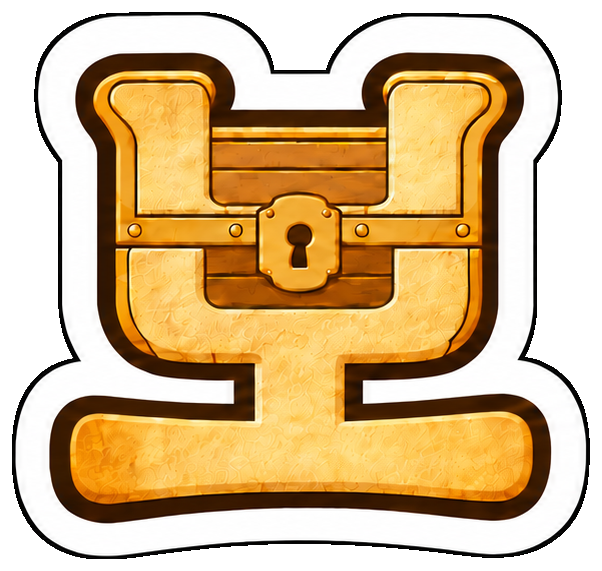
글과 미디어의 의미를 이해하고 정보를 비판적으로 보며 해석하는 능력
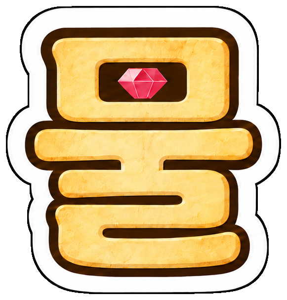
서로의 생각을 존중하고 의견을 나누며, 궁금한 점을 물으며 협력하는 능력
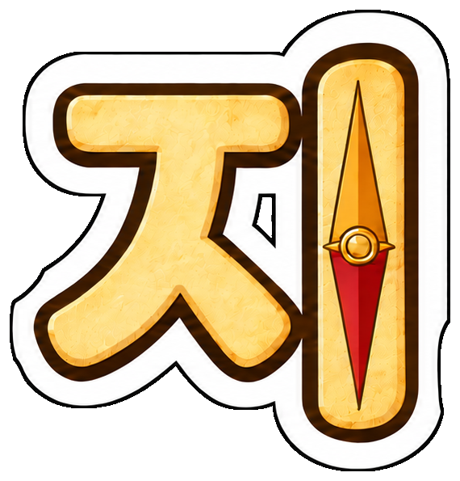
서로의 차이를 존중하고 공동의 가치를 실천하며 서로를 지지하고 참여하는 능력
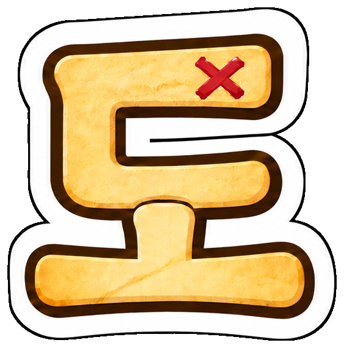
문학 작품과 현실을 연결하여 새로운 생각을 떠올리고 도전하며 표현하는 능력
02 / 수업 길잡이
읽기에서 탐구로, 창작에서 실천으로.
네 단계로 생각이 깊어집니다.
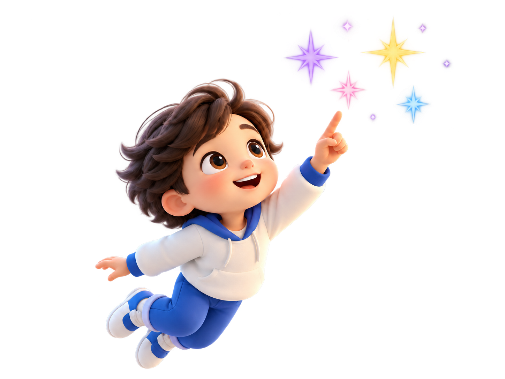
문학 작품 속 가치를 발견하여 자신의 생각으로 발전시키고, 세상과 나누는 네 단계의 학습 과정입니다.
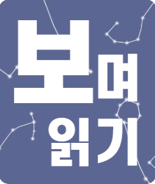
작품을 깊이 읽고 주제와 가치를 찾으며, 인상 깊은 구절과 생각을 나눕니다.
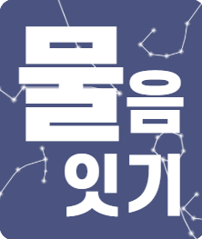
책 속 근거와 관점을 비교해 비판적으로 수용하고, 실천 과제를 설정합니다.
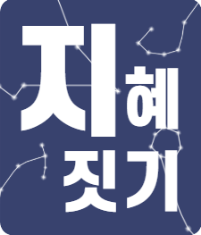
탐구한 내용을 바탕으로 자신의 생각을 정리하고 다양한 산출물을 창작합니다.
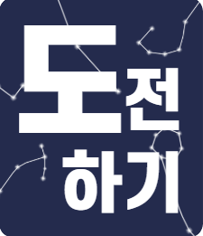
산출물을 공유하고 피드백을 주고받으며, 댓글과 캠페인 등의 활동으로 가치를 실천합니다.
문학 작품에서 발견한 가치를 미디어 이해와 창작·실천으로 연결하는 세 가지 전략입니다.
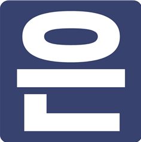
빛 길잡이글의 구조와 숨은 맥락을 찾아내는 능동적인 읽기 과정입니다.
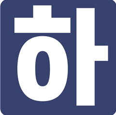
나로 연결세상에 하나뿐인 나만의 콘텐츠로 엮어내는 창의적 생산 과정입니다.
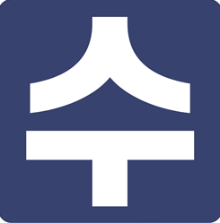
놓은 생각결과물을 친구들과 나누고 피드백을 주고받는 소통 과정입니다.
은하수 프로젝트의 ‘나·너·우리 수놓기’를 중심으로, 은·하·수 수업 전략과 보물지도 단계를 따라 보물지도 역량을 기릅니다.
03 / 프로젝트
세 권의 책, 세 번의 만남.
하나씩 넓어지는 배움의 세계.
교실과 교실을 잇는 배움
교사의 공동 설계와 수업 나눔, 연계 학급의 교류와 피드백으로
한 교실의 실천을 더 넓은 배움으로 이어갑니다.
04 / 자료실
수업의 흐름을 살피고,
우리 학급에 맞게 활용해 보세요.